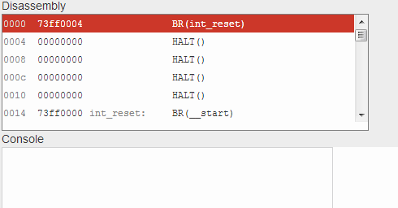

The Beta was a made-up processor used for teaching undergraduate computer science at MIT. Students in the Computation Structures class (6.004) were required to build an implementation from scratch out of logic gates and implement an operating system for it by the end of the class. It was one of my favorite classes at MIT, because I love programming constrained systems and found it fascinating and satisfying to build up a computer system from scratch.
I became preoccupied with building extensions for the Beta to allow it to be used for graphics experiments. The simulator we used for class ran as a web application, so I wrote a bookmarklet which was able to monkey-patch the simulator code and add a NES-like screen for simple graphics:

The code can be found on GitHub .
I also wrote an emulator in C for the Beta, which I called Gamma . It was supposed to provide CGA-style graphics and 8 bit PCM sound like an old computer system, but I only got around to implementing the latter. The emulator design has a few interesting attributes. Lua can be used to load programs and run code every time an instruction is executed, which is convenient for testing, debugging, and prototyping UI during development. It also implements a simple text console in the bottom of the window and keyboard interrupts.